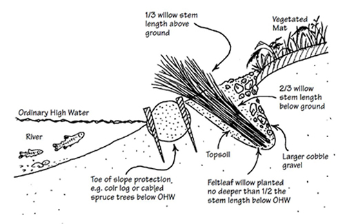

Live Siltation
What is it?
Live siltation techniques will vary depending on the site and objective. Live siltation can be implemented to help secure eroding banks, trap sediment, reestablish riparian vegetation, and provide fish nursery habitat. A trench is dug above the ordinary high water level and partially filled with woody branches and/or dormant cuttings. The wood bundles and trench will collect sediment during storm events and provide fish habitat cover.
 Live siltation (diagram from Streambank revegetation and protection: a guide for Alaska)
Conservation Benefits
- Collects excess sediment
- Helps to stabilize streambank
- Promotes riparian revegetation
- Provides fish nursery habitat and shade cover
What does it include?
Live siltation can be used effectively on inner river bends and is also used on outer river bends in conjunction with toe protection. A v-shaped trench is constructed along the countour of the bank at the ordinary high water level elevation. Most BMPs recommend a depth of atleast 2 feet to accomodate wood cuttings and provide enough area for fish habitat. Species for wood bundles should be selected based on location and if dormant cuttings should be included. Species for dormant cuttings should root easily and withstand local hydrolic conditions (willow and cottonwood are commonly used). Dormant cuttings will help promote the establishment of vegetation and provide shade cover for fish. Branches should be layed along the bottom and sides of the trench and then partially backfilled with soil and gravel to provide stability. This technique should not be used in areas of high flow velocities or areas with steep slopes to minimize the potential for the trench to wash out.
Live Siltation Links
Live Siltation Bibliography
- Karle et al. 2005. Bioengineered streambank erosion control structures in Alaska. Journal of the Transportation Reserach Board 1941: 122-128.